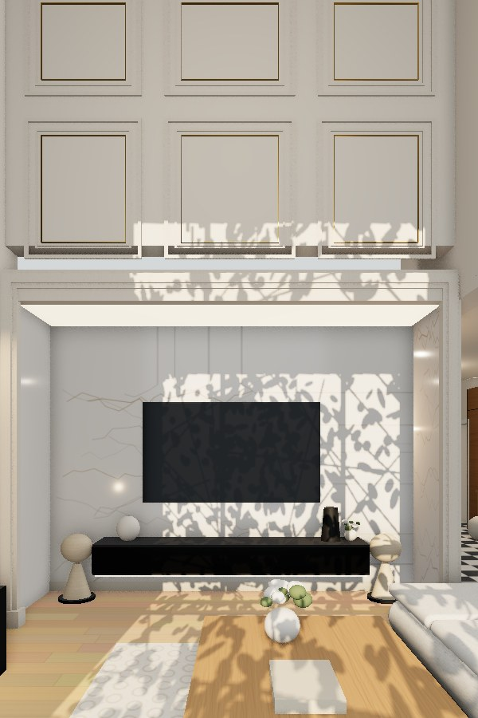
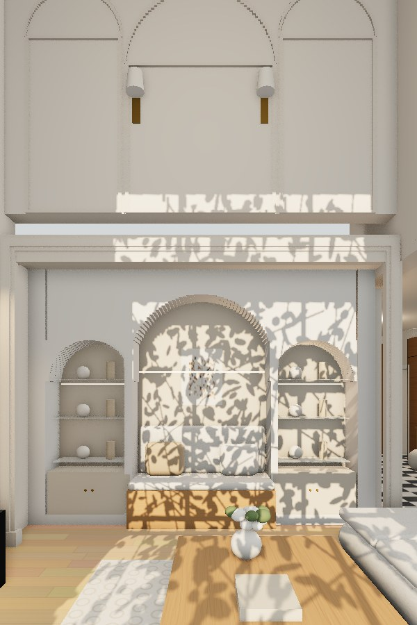
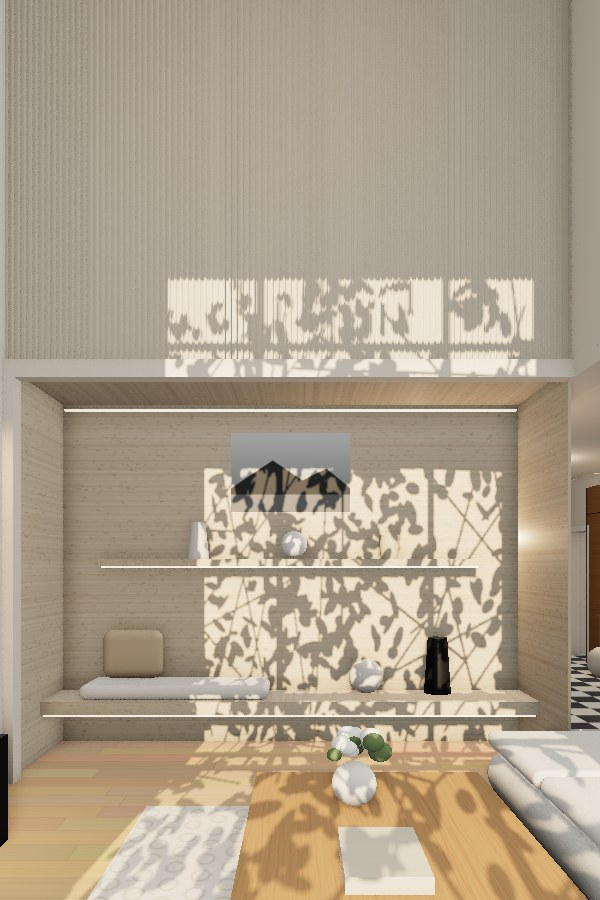
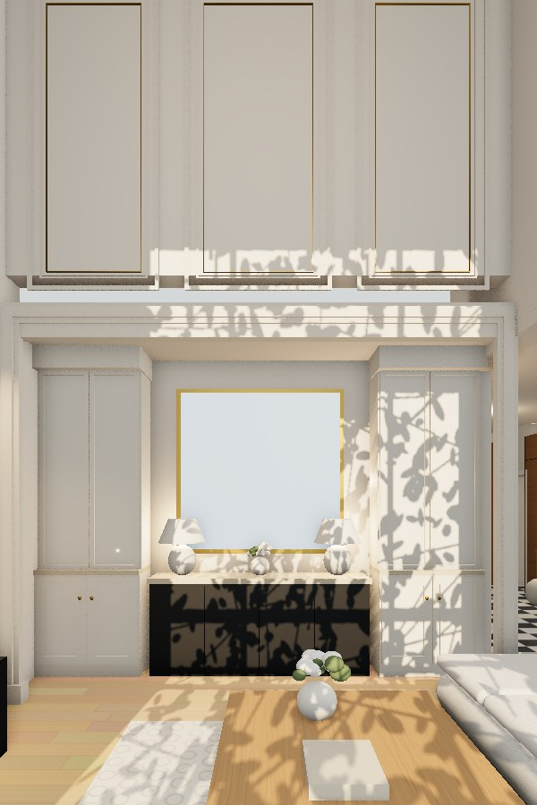
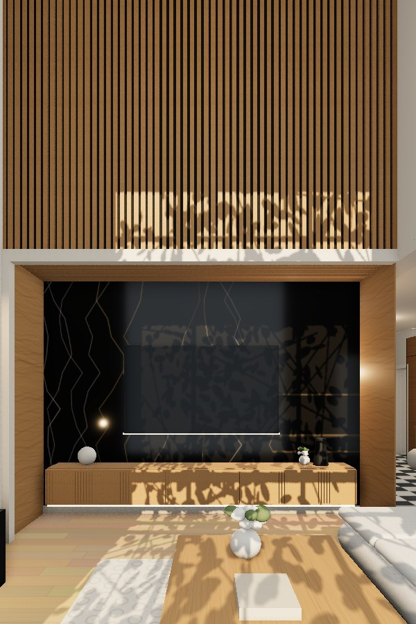
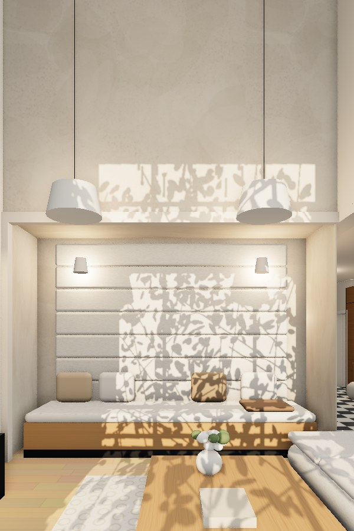
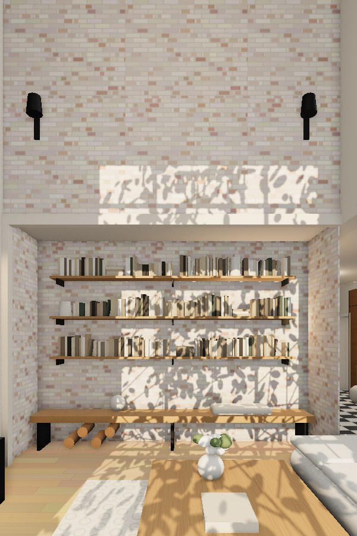
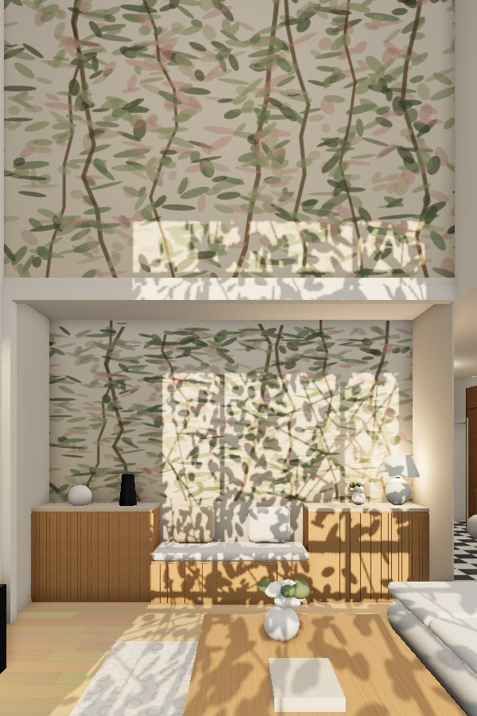

Izabelin · salon · wnęka 102 cm + antresola (ok. 5,9 m)
Koncepcje z rosyjskiego i polskiego Pinteresta
Każda koncepcja to cała ściana: wnęka 394 × 290 cm i antresola nad nią aż do sufitu. Wizualizacje na wymiarach z DWG, z oknem według oferty Yawal (394 × 572 cm) i słońcem przez fasadę. Telewizor zostaje na ścianie płd. tam, gdzie wnęka ma inną funkcję.
«Современная классика» – nowoczesna klasyka
Cechy stylu: symetria, boazeria i płyciny, cienkie mosiężne wstawki, marmur i trawertyn, podświetlane nisze, monochromatyczny beż z czernią, kaskadowe żyrandole w salonach „ze drugim światłem” (двусветная гостиная).

R1 · «Мраморная ниша»
Marmurowa nisza TV + boazeria z mosiądzem
Wnęka wyłożona jasnym marmurem (lub spiekiem Calacatta) z podświetleniem LED po obwodzie. W środku TV i długa, czarna konsola podwieszana z podświetleniem od spodu. Wnękę obramowuje szeroka, klasyczna opaska. Na antresoli boazeria: sześć symetrycznych płycin z cienką mosiężną wstawką, gzyms nad wnęką i kaskadowy żyrandol.
Marmur/spiek bookmatch, podświetlenie konturowe
Konsola lakier czarny 274 cm, LED pod spodem
Boazeria malowana w kolorze ścian + mosiądz 6 mm
Żyrandol kaskadowy czarny z mosiądzem
Koszt: wysoki

R2 · «Арки с подсветкой»
Trzy podświetlane łuki + łukowe płyciny
We wnęce ścianka z tynku z trzema łukowymi niszami: boczne z podświetlanymi szklanymi półkami i szafkami, środkowa z tapicerowaną ławą i obrazem. Na antresoli płyciny zakończone łukiem, powtarzające rytm nisz, i para mosiężnych kinkietów.
Łuki z płyt g-k + tynk dekoracyjny
LED w każdym łuku (ciepłe 2700 K)
Ława dębowa z poduszkami bouclé
Płyciny łukowe z listew na 3,3–5,5 m
Koszt: średni

R3 · «Травертин и рейки»
Trawertyn z podświetleniem + rejki do sufitu
Wnętrze wnęki w trawertynie (lub płytach trawertynopodobnych) z ukrytą listwą LED u góry. Podwieszana trawertynowa ława na całą długość i półka, obie podświetlone od spodu. Antresola to ryflowane panele (rejki) w kolorze greige od krawędzi wnęki do sufitu, z linią światła na 2,9 m.
Trawertyn szlifowany, ława gr. 10 cm
Półka 314 cm podświetlana
Panele ryflowane MDF malowane, 5,9 m
Minimum dekoracji – „cichy luksus”
Koszt: średni–wysoki

R4 · «Классическая библиотека»
Symetryczna biblioteka-witryna + lustro w mosiądzu
Dwie wysokie witryny (szkło + kremowe fronty z płycinami) z podświetlanymi półkami, między nimi czarna komoda z blatem z trawertynu, duże lustro w mosiężnej ramie i para lamp. Na antresoli boazeria z trzema wysokimi płycinami z mosiężną wstawką oraz mosiężne listwy oświetleniowe pod sufitem.
Witryny 92 × 50 cm, drzwi szklane z ramą
Komoda czarna 194 cm, blat trawertyn
Lustro 160 × 157 cm, rama mosiądz
Symetria – typowa dla «современной классики»
Koszt: wysoki
Polski Pinterest
Najczęstsze motywy: lamele dębowe, spieki wielkoformatowe za TV, panele tapicerowane, mikrocement, bielona cegła, fototapety na wymiar, ryflowane fronty, lampy na długich linkach w wysokich salonach.

P1 · Spiek + lamele
Ciemny spiek za TV + dębowe lamele do sufitu
Tył wnęki ze spieku wielkoformatowego w czerni z żyłą (typu Nero Marquina), boki i sufit wnęki w dębie. TV z podświetleniem, pod nim długa dębowa szafka z ryflowanym frontem, podświetlona od spodu. Na antresoli pionowe dębowe lamele na czarnym filcu aż do sufitu – najpopularniejsze połączenie na polskim Pintereście.
Spiek 12 mm, format 160 × 320
Szafka RTV 354 cm, ryflowany front
Lamele dębowe na filcu akustycznym 5,9 m
LED na krawędzi wnęki
Koszt: wysoki

P2 · Tapicerka + mikrocement
Panele tapicerowane + mikrocement + lampy na linkach
Wnęka w mikrocemencie z poziomymi panelami tapicerowanymi w bouclé (jak duże wezgłowie) i wbudowaną sofą na całą długość. Dwa kinkiety do czytania. Antresola w mikrocemencie, a przed nią dwie duże lampy zawieszone na długich linkach w połowie wysokości salonu – rada z Muratora dla salonów z antresolą.
Panele tapicerowane 334 × 200 cm, tkanina plamoodporna
Sofa wbudowana 354 × 92 cm
Mikrocement na wnęce i antresoli
Lampy Ø44 cm na 2,7 m
Koszt: średni

P3 · Cegła + stal
Bielona cegła rozbiórkowa do sufitu + stalowe półki
Cała ściana – wnęka i antresola – w bielonej cegle rozbiórkowej (lub płytkach cegłopodobnych, lżejszych). We wnęce dębowe półki na czarnych wspornikach, dębowa ława na stalowych nogach z miejscem na drewno dekoracyjne. Na antresoli dwa czarne kinkiety.
Cegła rozbiórkowa bielona / lico cegły 2 cm
Półki dąb + czarna stal
Ława 374 cm na stalowych nogach
Łączy się z czarnymi oknami RAL 7016
Koszt: średni

P4 · Fototapeta + ryflowanie
Fototapeta botaniczna + ryflowane dębowe fronty
Wnęka w greige z fototapetą botaniczną w górnej części, poniżej dębowe szafki z ryflowanymi frontami i blatem z trawertynu oraz ława z poduszkami. Na antresoli ta sama fototapeta na całą wysokość (ok. 3 m) – efekt „ogrodu” za salonem, zamówiona na wymiar ściany.